[11-1] SPI通信协议 — 学习笔记
- 课程：江协科技《STM32入门教程-2023版 细致讲解 中文字幕》
- 视频：BV1th411z7sn?p=36，47:40（2860 秒）
- 素材：238 帧关键帧（每 12 秒，宽 1280px）+ PP-OCRv4 画面硬字幕 OCR（449 段）；关键截图 15 张随笔记收录（源图在
vidsum_out/stm32_p36/frames/，站内图片在assets/images/stm32-36/） - 字幕情况：该集 B 站没有 CC/AI 字幕，文本由画面烧录的中文字幕 OCR 得到（source=subtitle-ocr）；错字主要是
SPI被识成「SPL/SP」、I2C→ 「12C」、读写→ 「卖写」、4 根→ 「4 粮」、右边→ 「石边」、运行过程→ 「云过程」、寄存器→ 「奇存」、引脚→ 「泻脚」，并混入行首符号与重复句——这些不是口述内容，已剔除/校正（清单见文末「存疑」）。 - 本集定位：这是模块 11 的理论课（上）——00:00–02:50 只演示两个成品程序（
11-1 软件SPI读写W25Q64与硬件 SPI 读写 W25Q64，现象相同：OLED 显示MID:EF DID:4017/W:01 02 03 04/R:01 02 03 04），之后全程 PPT：I2C 对比 → SPI 简介 → 引脚 → 硬件电路 → 移位示意图 → 4 种模式 → W25Q64 指令时序实测波形。本集没有写一行代码；结尾 47:38「本小节讲的是 SPI 协议的软硬件规定……下一节讲 W25Q64 芯片」——软件 SPI 代码在 [11-2]、硬件 SPI 在 [11-3]。
一句话结论
先说为什么需要 SPI：I2C 用两根线就实现了收发、应答、寻址等一大堆功能，硬件电路复杂（开漏 + 上拉）但性价比高；代价是速度慢——开漏结构下高电平靠上拉电阻「弹簧」拉回、边沿缓慢，标准模式只有 100kHz、快速也只有 400kHz，后加的 3.4MHz 高速模式又不太普及。SPI 走的是另一条路：SPI（Serial Peripheral Interface）由 Motorola 开发，四根通信线 SCK / MOSI / MISO / SS，同步、全双工，支持总线挂载多设备（一主多从、不支持多主机）——功能比 I2C 少、设计简单粗暴，但速度可以很快（SPI 协议并没有严格规定最大传输速度，具体上限取决于器件）。四根线：SCK（Serial Clock） 提供时钟（对应 I2C 的 SCL，数据的输出/输入都在 SCK 的上升沿或下降沿进行，所以数据位收发的时刻是明确确定的——这就是同步时序的好处）；MOSI（Master Output Slave Input） 主机→从机；MISO（Master Input Slave Output） 从机→主机；SS（Slave Select） 从机选择，低电平有效——全双工＝两根数据线同时收发，简单高效。一主多从靠 SS 线寻址（I2C 靠设备地址 + 寻址）：每多一个从机就多一根 SS 线——好处是主机「指定从机」只需拉低对应的 SS 线（「动动手指就能完成」），坏处是费线；另外 SPI 没有应答机制——发出去就不管对方在不在、收到没有，这是和 I2C 的重要区别。常见 SPI 器件：W25Q64（Flash 存储器，本课程用）、SPI 版 OLED（引脚常写 DI/DO 而不是 MOSI/MISO）、NRF24L01（2.4G 无线模块）、MicroSD 卡（原生 SDIO，但也支持 SPI 模式）。硬件电路三条规定：① 所有 SPI 设备的 SCK、MOSI、MISO 分别连在一起 ② 主机另外引出多条 SS 控制线，分别接到各从机的 SS 引脚 ③ 输出引脚配置为推挽输出，输入引脚配置为浮空或上拉输入。推挽驱动能力强、边沿迅速（不像 I2C 开漏那样上升沿缓慢）；关键规定：从机未被选中（SS=高）时，它的 MISO 必须切换为高阻态——否则多个从机同时推挽输出会短路（这是 SPI 对「数据线可能冲突」做的规定，由从机负责，主机程序不用管）。移位与字节交换：主机和从机各有一个移位寄存器 + 波特率发生器；主机在 SCK 驱动下把数据高位先行（MSB first）从 MOSI 移出，从机同理从 MISO 移出；主机 MOSI 的输出进入从机移位寄存器的最低位、从机 MISO 的输出进入主机移位寄存器的最低位——发送和接收同时进行，形成「字节交换」。字节交换是 SPI 的基本单元：发一个字节必然会同时收一个字节——只发送时可以忽略收到的数据，只接收时要发 0x00（或 0xFF）占位去「换」回从机的数据；只发/只收时存在资源浪费，SPI 不管这个。起始与终止最简单：起始＝SS 由高电平切换到低电平（选中从机、通信开始），终止＝SS 由低电平切换到高电平，SS 低电平期间就是通信期间。时序基本单元与 4 种模式：两个可配置位——CPOL（Clock Polarity，时钟极性）＝空闲状态时 SCK 的电平（0 低 / 1 高）、CPHA（Clock Phase，时钟相位）＝在 SCK 的第 1 个还是第 2 个边沿采样（移入）（0 第一边沿 / 1 第二边沿）；组合成模式 0～3，功能一样、最常用模式 0，本课程后面全部基于模式 0：CPOL=0（空闲低）+ CPHA=0（第 1 个边沿移入数据、第 2 个边沿移出数据）——即 SCK 上升沿采样/移入、下降沿准备/移出；模式 1（CPOL=0、CPHA=1）则第 1 边沿移出、第 2 边沿移入（采样边沿变成下降沿）；模式 2 ＝ 模式 0 的 CPOL 取反（空闲高）、模式 3 ＝ 模式 1 的 CPOL 取反——4 种只是采样时刻不同，知道可配置即可。W25Q64 指令时序（本集用实测波形讲三条指令）：① 0x06 写使能——起始后发单字节指令，MISO 无回传、呈高电平（FF）；② 0x02 页编程——0x02 + 24 位地址（如 0x12 0x34 0x56） + 数据字节，后续字节依次写入后续存储空间；③ 0x03 读数据——0x03 + 24 位地址 + 主机连续发 0x00 占位，同时从 MISO 换回从机的数据；容量大所以地址是 3 字节（小容量芯片可能用 1 字节、甚至把地址合进指令里）；其他指令「大同小异」——都是「起始 → 交换指令字节 → 交换地址/数据」。
0. 本集定位：理论课（SPI 协议全解），代码在 11-2/11-3
- 本集是纯理论课：片头 2.5 分钟只演示两个已经写好的成品程序，之后全程 PPT（I2C 对比 → SPI 简介 → 引脚 → 硬件电路 → 移位示意图 → 4 种模式 → W25Q64 实测波形），没有打开 Keil 写代码。
- 片尾 47:38：「本小节讲的是 SPI 协议的软硬件规定，并且也提前介绍了几个 W25Q64 的指令和时序……下一节讲 W25Q64 这个芯片」——软件 SPI 代码在 [11-2]、硬件 SPI 在 [11-3]。
- 本集不涉及：STM32 的 SPI 硬件外设寄存器细节（在 [11-3] 前后讲）、W25Q64 的完整指令集与地址映射（下一节）、SPI 的 LSB/MSB 配置位（只提「一般高位先行」）。
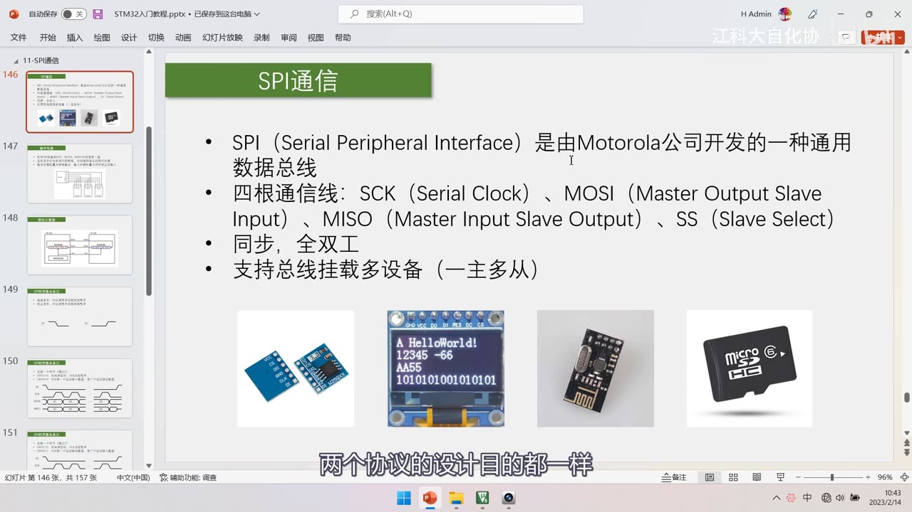
图 1：PPT「SPI通信」——SPI（Serial Peripheral Interface）是由 Motorola 公司开发的一种通用数据总线；四根通信线：SCK（Serial Clock）、MOSI（Master Output Slave Input）、MISO（Master Input Slave Output）、SS（Slave Select）；同步、全双工；支持总线挂载多设备（一主多从）；下方四张器件图：W25Q64 模块、SPI OLED、NRF24L01 无线模块、MicroSD 卡；字幕「两个协议的设计目的都一样」
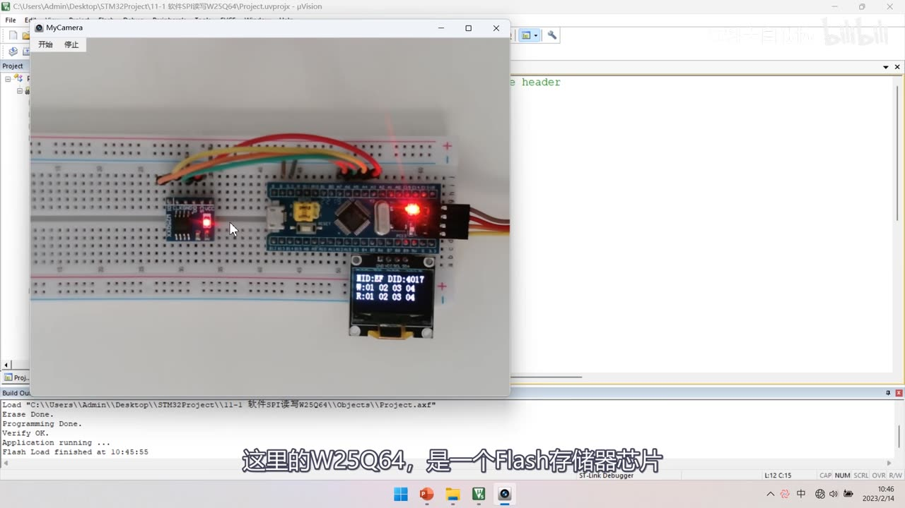
图 2：片头现象（工程 11-1 软件SPI读写W25Q64）——面包板上 W25Q64 模块与 STM32 由 4 根 SPI 线相连，OLED 显示 MID:EF DID:4017 / W:01 02 03 04 / R:01 02 03 04（写入与读回一致，说明读写正常）；字幕「这里的W25Q64，是一个Flash存储器芯片」
1. 与 I2C 对比：两种协议的设计取舍
- I2C 回顾：硬件电路复杂（开漏输出 + 4.7K 上拉），软件功能多（一根线兼顾收发、还有应答和寻址）；
- I2C 的优点：在消耗最低硬件资源（2 根线）的情况下实现了最多的功能——性价比非常高；
- I2C 的缺点：开漏结构下高电平驱动能力弱（靠上拉电阻把线「拉」回高，边沿缓慢），所以速度受限——标准模式 100kHz、快速模式 400kHz，后来改进电路做出的高速模式 3.4MHz 普及程度不高；
- SPI 的优点：协议不严格规定最大传输速度（有的器件速率比 STM32F1 主频还高）；设计简单粗暴、实现的功能没有 I2C 多，但快很多；
- SPI 的缺点：费线（一主多从要多根 SS）、没有应答、通信过程中经常有资源浪费（全双工下一根线空着也照发）；
- 一句话：两个协议的设计目的都一样（用少量线读写外部模块的寄存器），只是取舍不同——I2C 省线、功能全但慢，SPI 费线、功能少但快。
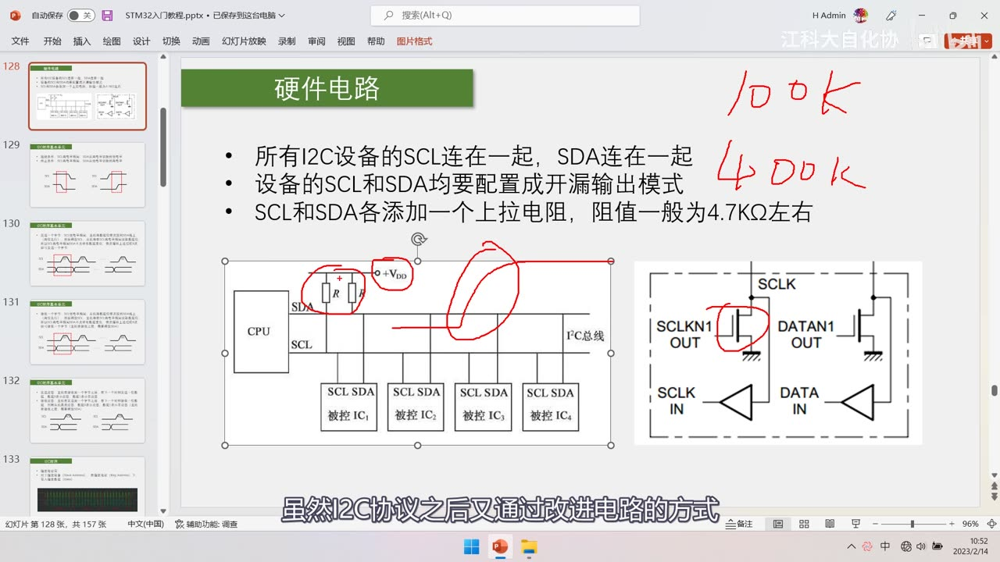
图 3：PPT「硬件电路」（复习 I2C 的那页）+ 右上角红笔写的「100K」「400K」——讲 I2C 开漏 + 上拉的结构决定了速度上限；图中红圈圈出上拉电阻与开漏输出的开关管；字幕「虽然I2C协议之后又通过改进电路的方式」
2. SPI 简介与引脚含义
- SPI（Serial Peripheral Interface，串行外设接口）：由 Motorola 公司开发的一种通用数据总线；
- 四根通信线：
| 引脚 | 全称 | 含义 |
|---|---|---|
| SCK | Serial Clock | 串行时钟线，由主机提供（对应 I2C 的 SCL），数据位在边沿收发 |
| MOSI | Master Output Slave Input | 主机输出、从机输入（主机→从机的数据线） |
| MISO | Master Input Slave Output | 主机输入、从机输出（从机→主机的数据线） |
| SS | Slave Select | 从机选择，低电平有效（也叫 CS/NSS，不同芯片叫法不同） |
- SCK 的作用：提供时钟信号——数据位的输出和输入都发生在 SCK 的上升沿或下降沿，所以数据位收发的时刻是明确确定的（「这就是同步时序的好处」）；
- 全双工：MOSI 和 MISO 两根数据线同时收发——主机通过 MOSI 把数据发给所有从机，同时通过 MISO 把从机数据收回来；全双工的好处就是简单高效；
- 一主多从：SPI 支持一主多从，不支持多主机；靠 SS 线寻址（I2C 靠设备地址 + 寻址方式）：
- 主机为每个从机单独引一根 SS 线，要跟哪个从机通信，就把那根 SS 拉低，其他从机的 SS 保持高电平不理会总线；
- 好处：指定从机「动动手指就能完成」；坏处：每多一个从机就多一根线（费线）；
- SPI 没有应答机制：把数据发出去就结束了，不管对方是不是存在、有没有收到（I2C 每个字节都有应答，这是重要区别）。
3. 常见 SPI 器件
| 器件 | 说明 |
|---|---|
| W25Q64 | Flash 存储器芯片（本课程用它学 SPI），用于存大量数据；通过 4 根 SPI 线读写 |
| SPI 版 OLED | 引脚常写 DI/DO（而不是 MOSI/MISO）——DI 就是 MOSI、DO 就是 MISO，具体看模块手册 |
| NRF24L01 | 2.4G 无线通信模块，使用 SPI 协议 |
| MicroSD 卡 | 原生协议是 SDIO，但也支持 SPI 模式，可用 SPI 读写 |
- 注意：不同芯片/模块的引脚命名不统一（MOSI 可能叫 DI、SDO、SDI，SS 可能叫 CS、NSS……），接线前一定要看手册。
4. 硬件电路
4.1 三条规定
- 所有 SPI 设备的 SCK、MOSI、MISO 分别连在一起；
- 主机另外引出多条 SS 控制线，分别接到各从机的 SS 引脚；
- 输出引脚配置为推挽输出，输入引脚配置为浮空或上拉输入。
- 为什么用推挽：推挽驱动能力强、边沿迅速——不像 I2C 开漏那样上升沿缓慢（I2C 要靠上拉电阻「拉回」高电平）；所以 SPI 可以跑到很高速度；
- 主机引脚：SCK、MOSI 是输出（推挽）、MISO 是输入（浮空/上拉）、SS 是输出（推挽）；从机反过来（SCK、MOSI、SS 是输入，MISO 是输出）；
- 一个典型接线：主机引出 SCK + MOSI + MISO + 3 根 SS（挂 3 个从机）＝ 6 根通信线（图中的例子），再加 VCC/GND 供电。
4.2 关键规定：未选中从机的 MISO 必须高阻
- 问题：MISO 是所有从机共用的一根线——如果某个从机没被选中（SS=高），它的 MISO 若还推挽输出，就会和另一个正在发送的从机冲突短路；
- 规定：从机未被选中（SS=高）时，它的 MISO 必须切换为高阻态（释放）——只有被选中的从机才驱动 MISO；
- 这是 SPI 对「可能冲突」做出的规定，属从机端的责任，主机程序不用管；
- 主机端 MISO 配置为浮空输入或上拉输入：若配上拉，SS 未选中时读到的是高电平；若配浮空，电平不确定（所以一般建议上拉）。
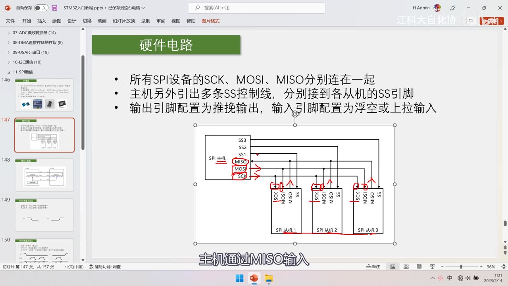
图 4：PPT「硬件电路」（SPI 版）——三条规定：所有 SPI 设备的 SCK、MOSI、MISO 分别连在一起；主机另外引出多条 SS 控制线，分别接到各从机的 SS 引脚（高亮）；输出引脚配置为推挽输出，输入引脚配置为浮空或上拉输入；下方示意图：SPI 主机（SS1/SS2/SS3、MISO、MOSI、SCK）分别接 3 个 SPI 从机，每台从机有 SCK/MOSI/MISO/SS；字幕「主机通过MISO输入」
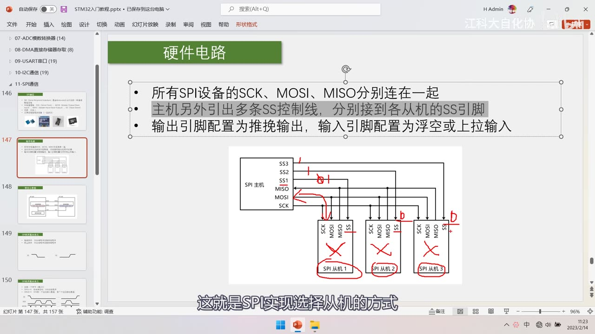
图 5：同一页上的红笔——标注 SS1/SS2/SS3 三条选择线、MISO/MOSI/SCK 的方向箭头，并在三个从机的 SS 处画叉/圈：只有被拉低 SS 的从机才参与通信；字幕「这就是SPI实现选择从机的方式」
5. 移位示意图与「字节交换」
- 结构：主机和从机各有一个移位寄存器；主机还有一个波特率发生器（产生 SCK）；
- 发送：主机在 SCK 驱动下，把数据**高位先行（MSB first）**逐位移到 MOSI 上；从机把自己的数据逐位移到 MISO 上；
- 方向：主机 MOSI 的输出进入从机移位寄存器的最低位；从机 MISO 的输出进入主机移位寄存器的最低位——所以每个 SCK 时钟，两边各移出一位、各移入一位；
- 8 个时钟之后：主机原本的 8 位数据「跑」到了从机、从机原本的 8 位数据「跑」到了主机——这就是 SPI 的字节交换；
- 字节交换是 SPI 的基本单元：只要发一个字节，就必然会同时收一个字节；
- 实用结论：
- 只发送：发出去就行，收到的字节忽略（或者不管 MISO）；
- 只接收：主机必须发一个占位字节（
0x00或0xFF），用这 8 个时钟把从机的数据「换」回来； - 只发/只收时必然有一根数据线闲着——这就是 SPI「资源浪费」的体现，协议本身不管。
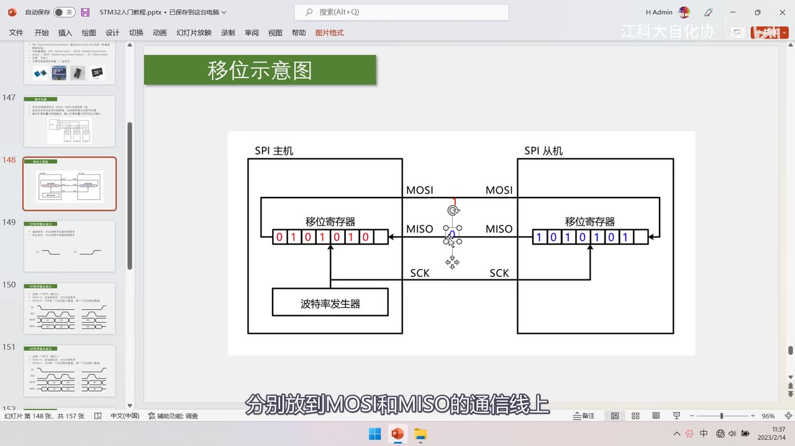
图 6：PPT「移位示意图」——左侧「SPI 主机」（含移位寄存器 01010101 与波特率发生器），右侧「SPI 从机」（含移位寄存器 10101010）；主机 MOSI → 从机 MOSI，从机 MISO → 主机 MISO，主机 SCK → 从机 SCK；字幕「分别放到MOSI和MISO的通信线上」
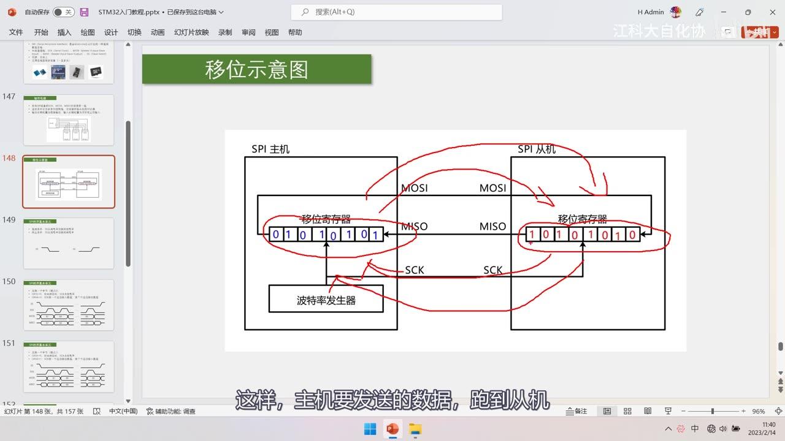
图 7：同一示意图上的红笔——在两个移位寄存器之间画交换箭头（主机数据跑到从机、从机数据跑到主机），并标出 SCK 由主机的波特率发生器驱动；字幕「这样，主机要发送的数据，跑到从机」
6. 起始与终止条件
- 起始条件：SS 由高电平切换到低电平——选中从机、通信开始；
- 终止条件：SS 由低电平切换到高电平——通信结束；
- SS 低电平期间就是通信期间；起始/终止比 I2C 简单得多（I2C 要在 SCL 高电平期间做 SDA 跳变）；
- 细节：
- SS 未选中时 SCK 处于默认电平（模式 0 空闲为低）；
- SS 上升沿结束通信后，从机 MISO 必须置回高阻态；
- MOSI 空闲时的默认电平未定义，可以不管。
7. 时序基本单元与 4 种模式
7.1 两个配置位：CPOL 与 CPHA
- CPOL（Clock Polarity，时钟极性）：空闲状态时 SCK 的电平——0 = 低电平、1 = 高电平；
- CPHA（Clock Phase，时钟相位）：在 SCK 的第 1 个还是第 2 个边沿采样（移入）数据——0 = 第 1 个边沿、1 = 第 2 个边沿；
- 两者组合出 4 种模式（模式 0～3），功能一样，只是采样时刻不同。
7.2 模式 0（最常用，本课程后续全部用它）
- CPOL = 0：空闲时 SCK 为低电平；
- CPHA = 0：SCK 的第 1 个边沿（上升沿）移入数据、第 2 个边沿（下降沿）移出数据；
- 也就是：SS 拉低后，SCK 上升沿采样（移入）、下降沿准备（移出）下一位；
- 多字节连续交换时注意时序拼接：一个字节的 B0 之后紧跟着下一个字节的 B7。
7.3 模式 1（对比）
- CPOL = 0（空闲低）；
- CPHA = 1：第 1 个边沿移出数据、第 2 个边沿移入数据；
- 与模式 0 的区别就在采样边沿（模式 1 在下降沿采样）。
7.4 模式 2 / 模式 3
- 模式 2 ＝ 模式 0 的 CPOL 取反（空闲时 SCK 为高）；
- 模式 3 ＝ 模式 1 的 CPOL 取反；
- 4 种模式功能一样，知道「可配置」即可；CPHA 不能单独决定上升/下降沿采样，必须配合 CPOL 看。
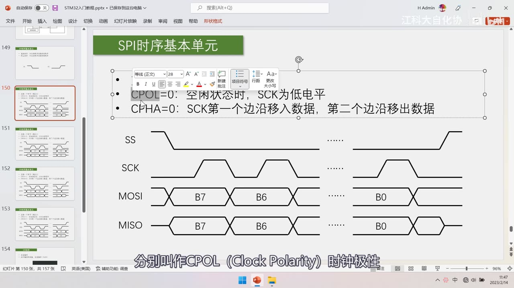
图 8：PPT「SPI时序基本单元」——「CPOL=0：空闲状态时，SCK为低电平」「CPHA=0：SCK第一个边沿移入数据，第二个边沿移出数据」（模式 0 的定义）；下方波形 SS/SCK/MOSI/MISO，标注 B7、B6 …… B0；字幕「分别叫作CPOL（Clock Polarity）时钟极性」
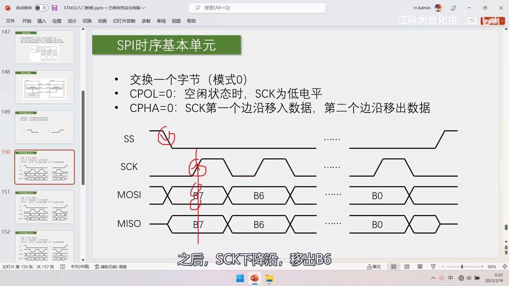
图 9：模式 0 波形详解——「交换一个字节（模式0）」；CPOL=0（空闲低）、CPHA=0（第一个边沿移入、第二个边沿移出）；SS 拉低后 SCK 上升沿采样 B7、下降沿移出 B6……红笔标出 SS 下降沿与第一个 SCK 上升沿；字幕「之后，SCK下降沿，移出B6」
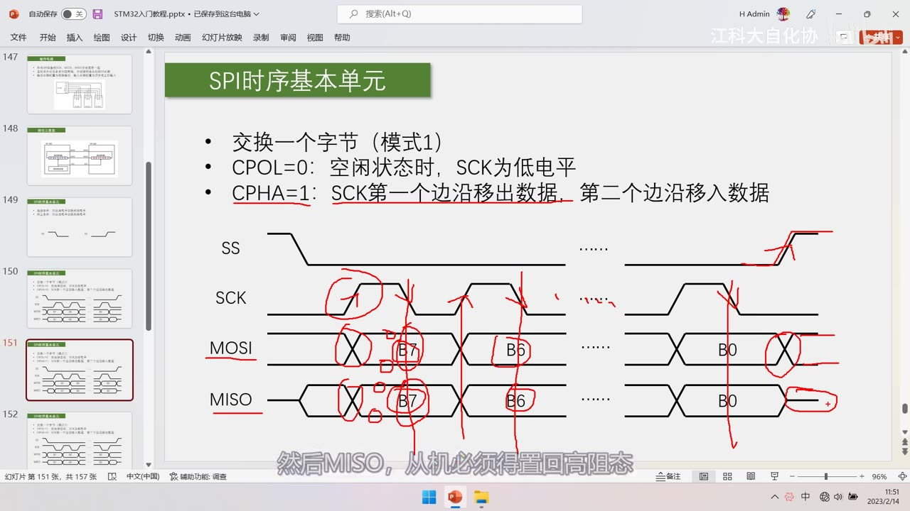
图 10：模式 1 波形——「交换一个字节（模式1）」；CPOL=0（空闲低）、CPHA=1：第一个边沿移出数据、第二个边沿移入数据；波形上红笔圈出采样位置（在下降沿）；字幕「然后MISO，从机必须得置回高阻态」
8. W25Q64 的指令时序（实测波形）
波形是作者用软件 SPI 抓的（所以 MOSI 的电平变化相对 SCK 有延迟，不像硬件 SPI 那样紧贴边沿），作者自己也提到这一点。
8.1 0x06：写使能（单字节指令）
- 发送指令：向 SS 指定的设备发送指令
0x06； - 波形：SS 拉低 → SCK 打 8 个时钟 → MOSI 依次为
00000110（0x06，高位先行）→ SS 拉高； - MISO 全程为高电平（
FF）——因为这条指令没有回传数据； - 从机收到写使能指令后，会控制内部硬件允许后续的写入操作（写操作前必须先发写使能）。
8.2 0x02：页编程（指令 + 24 位地址 + 数据）
- 时序：SS 拉低 → 发
0x02（页编程指令）→ 发 24 位地址（3 个字节，如0x12 0x34 0x56）→ 发要写入的数据字节…… - 后续字节会自动依次写入后续的存储空间（在页内递增）；
- 容量大的芯片（如 W25Q64，8MB）地址要 3 个字节（24 位）；容量小的芯片可能只要 1 个字节，甚至把地址合进指令里。
8.3 0x03：读数据（指令 + 24 位地址 + 占位换数据）
- 时序：SS 拉低 → 发
0x03（读数据指令）→ 发 24 位地址 → 然后主机连续发0x00占位，同时从 MISO 读回从机的数据； - 因为 SPI 是「字节交换」：主机发一个字节，必然会同时收到一个字节——所以接收数据必须用占位字节去「换」；
- 指令与地址发完后，从机就开始输出数据（「主机发占位的同时，从机就会把数据送过来」）。
8.4 指令时序的共同格式
- 所有指令都是同样的模式：起始（SS 拉低）→ 交换一个字节（指令码）→ 交换若干字节（地址/数据）→ 终止（SS 拉高）；
- 不同指令的差别只在「指令码」和「后续字节的定义」（哪个是地址、哪个是数据、要不要回传数据），时序玩法完全一样；
- 所以 SPI 用起来非常灵活——「只要理解了字节交换，任何 SPI 器件都能控制」。
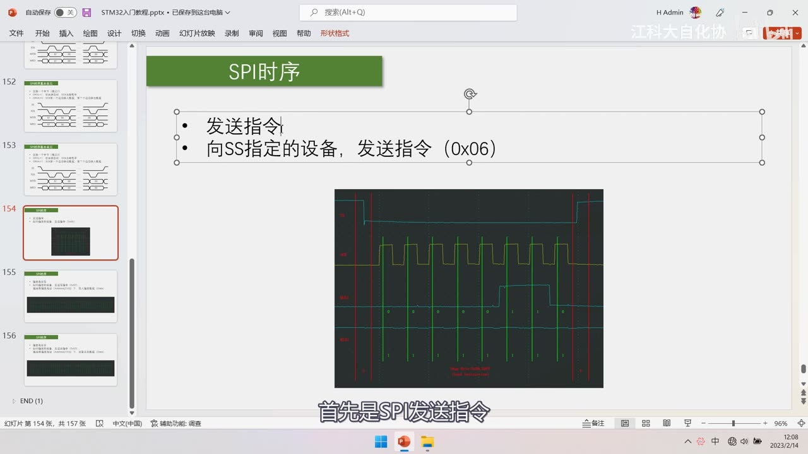
图 11：PPT「SPI时序」——发送指令：向 SS 指定的设备，发送指令（0x06）；下方是实测波形（SS、SCK、MOSI、MISO，绿色竖线为逐位、红竖线分隔各段）；字幕「首先是SPI发送指令」
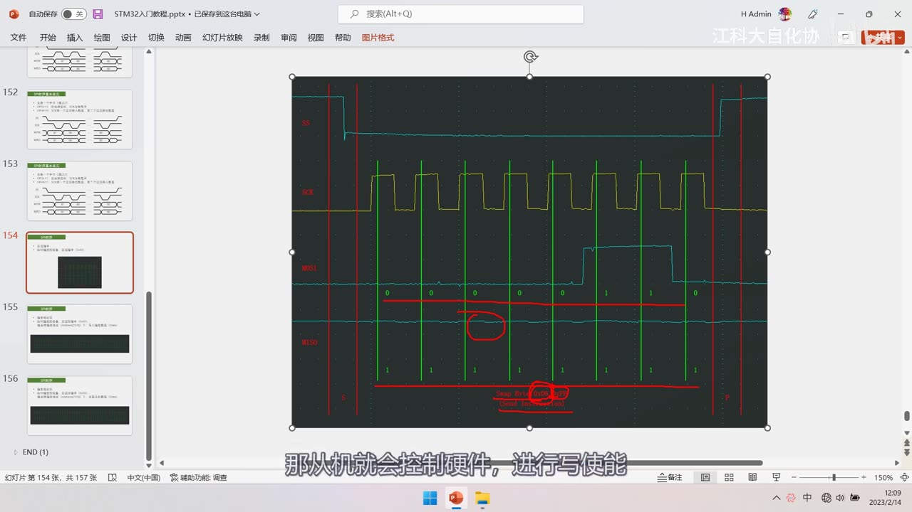
图 12：0x06 波形放大——SS、SCK、MOSI（位值 0 0 0 0 0 1 1 0＝0x06，红笔圈出并标 0x06，分段标注 Send Byte: 0x06 (Write Enable)）、MISO（全程高）；字幕「那从机就会控制硬件，进行写使能」
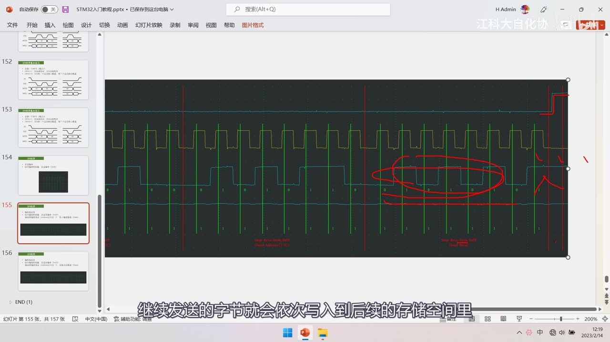
图 13：0x02 页编程波形——分段标注 Send Byte: 0x02 (Write Command) 与 Send Byte: 0x12 0x34 0x56 (24bit Address)；红笔圈出其后连续输出的数据字节；字幕「继续发送的字节就会依次写入到后续的存储空间里」
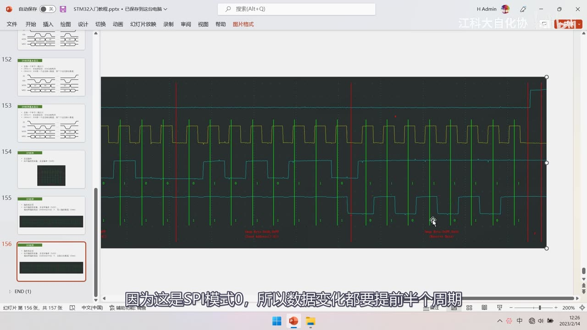
图 14：0x03 读数据波形——分段标注 Send Byte: 0x03 (Read Command)、Send Byte: 0x12 0x34 0x56 (24bit Address) 与 Receive Byte: … (Data)；MOSI 在地址后变成 0x00 占位、MISO 上出现数据；字幕「因为这是SPI模式0，所以数据变化都要提前半个周期」
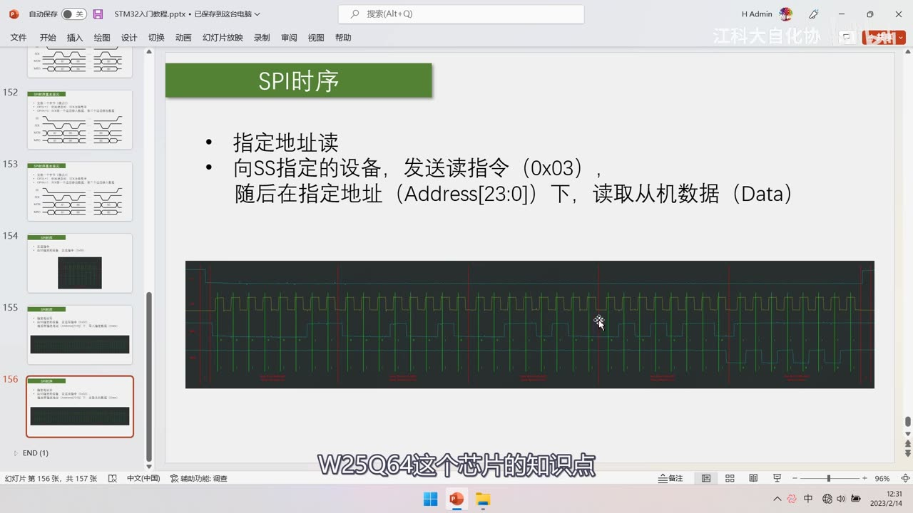
图 15：PPT「SPI时序」——指定地址读：向 SS 指定的设备发送读指令（0x03），随后在指定地址（Address 的 23:0 位）下读取从机数据（Data）；下方是整帧实测波形的缩略视图；字幕「W25Q64这个芯片的知识点」
坑与易错点
- SPI 没有应答：发出去就不管对方在不在——不像 I2C 每字节有 ACK，别指望它告诉你「对方没收到」。
- 一主多从靠 SS 线，不是靠地址：每个从机一根 SS，拉低哪个就跟哪个通信；从机多了线也多。
- SS 低电平有效：拉低才是选中，别接反。
- 未选中的从机 MISO 必须高阻：这是从机端责任；主机端 MISO 建议配上拉输入（浮空输入读到的电平不确定）。
- 推挽 vs 开漏：SPI 输出用推挽（边沿快、能跑高速）；I2C 用开漏（防短路但慢）。
- 只接收时必须发占位字节：
0x00或0xFF都行——因为 SPI 是字节交换，不发就收不到。 - 只发送时收到的数据无意义：忽略即可（发一个字节必然同时收一个字节）。
- 模式 0 最常用：
CPOL=0（空闲低）+CPHA=0（第 1 边沿移入、第 2 边沿移出）——本课程后面全用模式 0。 - CPHA 不能单独看：它说的是「第几个边沿」，具体是上升沿还是下降沿还要结合 CPOL。
- 起始/终止只看 SS：SS 由高→低是起始、低→高是终止，SS 低电平期间就是通信期间。
- 高位先行（MSB first）：先发最高位 B7；本集只提到「一般都高位先行」，LSB/MSB 的配置位在硬件外设部分。
- W25Q64 写之前要先发
0x06写使能：否则写入无效。 - W25Q64 地址是 24 位（3 字节）：
0x12 0x34 0x56这种顺序是高位字节在前；小容量芯片地址长度可能不同。 - 软件 SPI 抓的波形有延迟：MOSI 变化相对 SCK 边沿滞后，属正常（软件翻转引脚的速度限制），不代表器件问题。
时间轴
| 时间 | 内容 |
|---|---|
| 0:06 | 开场：继续 STM32 入门教程 |
| 0:36 | 先学习 SPI 协议的软硬件规定 |
| 0:49 | 再用硬件 SPI 实现同样的功能 |
| 0:52 | 先看本节课的程序现象 |
| 0:55 | 本节课主要有两个代码 |
| 0:57 | 软件 SPI 读写 W25Q64 与硬件 SPI 读写 W25Q64 |
| 1:03 | 两个代码实现的效果一样 |
| 1:24 | W25Q64 需要存储大量数据 |
| 1:29 | 我们用 4 根 SPI 通信线 |
| 1:36 | STM32 操作引脚电平实现读写存储器芯片 |
| 1:43 | OLED 上可以看到测试程序现象 |
| 1:47 | 显示的是 MID，读出 0xEF |
| 1:54 | DID 是设备 ID，读出 0x4017 |
| 2:11 | 既然是存储器芯片，第二行是写入的数据 |
| 2:32 | 说明读写存储器芯片没问题 |
| 2:43 | 这些等写程序时再验证 |
| 2:46 | 程序现象看到这里，回到 PPT |
| 3:14 | I2C 和 SPI 各有优势和劣势 |
| 3:26 | 学 I2C 时硬件电路相对复杂 |
| 3:33 | 要配置成开漏外加上拉 |
| 3:36 | 软件上有很多功能和要求，一根线兼顾收发 |
| 3:48 | 所以 I2C 的性价比非常高 |
| 4:27 | I2C 开漏加上拉的结构使高电平驱动能力弱 |
| 4:34 | 由低变高时边沿缓慢 |
| 4:48 | 只有 100kHz 的时钟频率，快速模式也只有 400kHz |
| 5:00 | 高速模式 3.4MHz 普及程度不高 |
| 5:08 | 速度还是慢了很多 |
| 5:18 | 简单总结 SPI 相对 I2C 的优缺点 |
| 5:25 | SPI 协议没有严格规定最大传输速度 |
| 5:41 | 有的比 STM32F1 的主频还高 |
| 5:44 | SPI 的设计简单粗暴，功能没 I2C 多 |
| 5:50 | SPI 比 I2C 简单很多 |
| 5:59 | 通信过程中经常有资源浪费 |
| 6:19 | 对 SPI 应该有了大体印象 |
| 6:23 | 回到 PPT 研究 SPI |
| 6:27 | SPI 有四根通信线 |
| 6:42 | SS 的意思是从机选择 |
| 6:46 | 这是 SPI 典型的引脚名称 |
| 7:12 | 以 SPI 官方文档名称为准 |
| 7:30 | SCK 用来提供时钟信号 |
| 7:34 | 数据位的输出和输入都在上升沿或下降沿进行 |
| 7:39 | 数据位的收发时刻可以明确确定 |
| 7:47 | 这就是同步时序的好处 |
| 7:57 | SPI 是全双工协议 |
| 9:10 | 全双工的好处就是简单高效 |
| 9:33 | 一主多从，不支持多主机 |
| 9:51 | I2C 这里要涉及分配地址和寻址 |
| 10:03 | SPI 专门用 SS 线指定从机 |
| 10:22 | 需要找哪个从机就控制对应 SS |
| 10:29 | 指定从机动动手指就能完成 |
| 10:50 | SPI 没有应答机制 |
| 10:52 | 接收数据就接收，不管对面是否存在 |
| 11:00 | 下面图片是采用 SPI 通信的芯片和模块 |
| 11:04 | 本课程使用的芯片 W25Q64 |
| 11:41 | 这里的 DI 就是 MOSI |
| 11:50 | 有的会用 DI 和 DO 简写 |
| 12:15 | 这是利用 SPI 通信的 OLED 屏幕 |
| 12:19 | 引脚不是标准名称，看手册 |
| 12:27 | 这是个 2.4G 无线通信模块 NRF24L01 |
| 12:34 | 这个芯片使用 SPI 通信协议 |
| 12:44 | 还有常见的 MicroSD 卡 |
| 12:46 | 官方协议是 SDIO，但也支持 SPI |
| 13:00 | 接下来看 SPI 硬件和软件规定 |
| 13:05 | 典型应用电路 |
| 13:28 | 左边 SPI 主机引出了 6 根通信线 |
| 13:32 | SS 线需要 3 根，加上 MOSI、MISO、SCK 共 6 根 |
| 13:43 | 高低电平都是相对 GND 的电压差 |
| 13:54 | 如果从机没有独立供电还要 VCC 和 GND |
| 14:09 | 时钟线完全由主机掌控 |
| 14:37 | 所有从机通过 MOSI 输入 |
| 14:53 | 主机通过 MISO 输入 |
| 15:10 | 所有 SCK 连在一起 |
| 15:12 | 所有 MOSI 连在一起 |
| 15:15 | 所有 MISO 连在一起 |
| 15:17 | 每条线的数据传输方向都用箭头标出 |
| 15:25 | 时钟和数据传输没问题 |
| 15:53 | SS 线要每个从机单独一根 |
| 17:05 | 三条规定讲完 |
| 17:07 | 输出引脚配推挽，输入浮空或上拉 |
| 17:17 | 推挽驱动能力强，边沿迅速 |
| 17:33 | MISO 冲突问题：未选中从机 MISO 必须高阻 |
| 18:07 | 这是 SPI 对可能冲突做的规定 |
| 18:09 | 接下来看移位示意图 |
| 18:20 | 主机和从机各有一个移位寄存器 |
| 19:13 | 主机还有波特率发生器 |
| 19:54 | 高位先行，MSB first |
| 20:27 | 主机数据移到 MOSI，从机数据移到 MISO |
| 20:34 | 主机输出进入从机移位寄存器最低位 |
| 21:47 | 从机输出进入主机移位寄存器最低位 |
| 22:17 | 8 个时钟后完成字节交换 |
| 22:18 | 字节交换是 SPI 的基本单元 |
| 22:30 | 发一个字节必然同时收一个字节 |
| 22:32 | 只发送时忽略收到的数据 |
| 22:33 | 只接收时发 0x00 或 0xFF 占位 |
| 22:34 | 只发只收时会浪费一根线的资源 |
| 22:35 | 下面看时序基本单元 |
| 22:36 | 起始条件是 SS 由高变低 |
| 23:20 | 终止条件就是 SS 由低变高，一次通信结束 |
| 24:10 | SS 低电平期间，SCK 打多少拍就交换多少位 |
| 25:00 | 数据在 SCK 边沿移出/移入，所以 SPI 是同步时序 |
| 25:26 | 终止就是 SS 由低变高，通信结束 |
| 25:29 | SS 高电平时，从机不参与总线、MISO 高阻 |
| 25:31 | 一次通信期间，SCK 打多少拍就交换多少位 |
| 25:34 | 数据在 SCK 边沿移出/移入，所以叫同步时序 |
| 25:37 | 下面来看具体的边沿定义 |
| 25:40 | 终止条件是 SS 由低变高 |
| 26:13 | SS 低电平期间就是通信期间 |
| 26:23 | 比 I2C 的起始终止简单 |
| 26:29 | 时序基本单元就是交换一位的完整过程 |
| 26:30 | 交换一位要看清什么时候移出、什么时候采样 |
| 26:31 | SPI 用 SS 选中从机后，靠 SCK 边沿同步移位 |
| 26:32 | 同一个字节，采样边沿不同就是不同的模式 |
| 26:36 | 时序基本单元里有 4 种模式 |
| 26:49 | 由 CPOL 和 CPHA 两个位决定 |
| 26:52 | CPOL 是时钟极性，决定空闲电平 |
| 26:56 | CPHA 是时钟相位，决定第几个边沿采样 |
| 27:23 | 先看模式 0 的完整波形 |
| 27:42 | SS 拉低后，SCK 第一个上升沿采样 B7 |
| 29:30 | SCK 下降沿时，主机把 B6 放上 MOSI |
| 29:38 | 从机同样在 MISO 上逐位移出数据 |
| 31:09 | 8 个边沿后一个字节交换完成 |
| 31:32 | 模式 0 是 CPOL=0、CPHA=0 |
| 31:36 | 模式 0 最常用，后面都用它 |
| 31:40 | 交换一个字节的模式 0 波形 |
| 32:23 | 空闲 SCK 为低电平 |
| 32:25 | 第一个边沿移入数据，第二个边沿移出数据 |
| 32:53 | 上升沿采样 B7，下降沿移出 B6 |
| 33:37 | 依次完成 8 位，一个字节交换完毕 |
| 34:19 | 模式 1 是 CPOL=0、CPHA=1 |
| 34:25 | 第一个边沿移出，第二个边沿移入 |
| 34:39 | 两者区别就在采样边沿 |
| 34:41 | 多字节连续交换时注意拼接 |
| 34:44 | 模式 2 是模式 0 的 CPOL 取反 |
| 35:06 | 模式 3 是模式 1 的 CPOL 取反 |
| 35:18 | 4 种模式功能一样，知道可配置即可 |
| 35:54 | CPHA 不能单独决定上升还是下降沿采样 |
| 36:04 | SS 未选中时，SCK 停在空闲电平 |
| 36:26 | 一次 SPI 通信可以交换任意多个字节 |
| 37:07 | W25Q64 的指令都是先发 1 字节指令码 |
| 37:32 | 下面看 W25Q64 的指令时序模型 |
| 37:55 | 起始后第一个字节就是指令码 |
| 38:00 | 时序细节：SS 未选中时 SCK 处于默认电平（模式 0 为低） |
| 38:08 | 先看 0x06 写使能：单字节指令 |
| 38:35 | SS 上升沿结束通信，从机 MISO 置回高阻 |
| 38:50 | MOSI 空闲时的默认电平未定义，可以不管 |
| 39:00 | 看波形：SS 拉低后 SCK 开始打 8 个时钟 |
| 39:35 | 软件模拟的时序，MOSI 变化相对 SCK 有延迟 |
| 40:01 | 从机收到 0x06 后控制硬件进行写使能 |
| 40:22 | 数据发完后 SS 置回高电平，通信结束 |
| 40:37 | MISO 无回传时呈高电平（0xFF 默认高） |
| 40:48 | 对照指令集：0x06 就是写使能（图 12 波形） |
| 41:00 | 单字节指令看完，接着看带地址的指令 |
| 41:06 | 0x02 页编程：指定地址写 |
| 41:12 | 发送 0x02 指令 |
| 41:24 | 指令后面紧跟 24 位地址 |
| 41:34 | 地址为 0x12 0x34 0x56；SS 下降沿开始、MOSI 空闲高 |
| 41:40 | 随后发送要写入的数据字节 |
| 42:10 | 继续发送的字节会依次写入后续存储空间 |
| 43:48 | 0x02 页编程波形看完（图 13） |
| 43:50 | 0x03 读数据：先发 0x03 指令 |
| 44:10 | 再发 24 位地址 0x12 0x34 0x56 |
| 44:40 | 地址发完后，主机发 0x00 占位 |
| 45:10 | 同时从 MISO 读回从机的数据 |
| 46:20 | 这样主机就实现了指定地址读一个字节 |
| 46:48 | 模式 0 下数据变化提前半个周期（图 14） |
| 46:55 | 读时序讲完 |
| 46:58 | 芯片还规定了很多其他功能的时序 |
| 47:03 | 它们的格式大同小异 |
| 47:07 | 都是起始、交换、交换 |
| 47:10 | 字节的功能定义不同而已 |
| 47:11 | 其他 SPI 器件也是类似的一套指令/时序格式 |
| 47:13 | 理解了字节交换，任何 SPI 器件都能控制 |
| 47:16 | 以上就是本小节的全部内容 |
| 47:28 | 下一节讲 W25Q64 这个芯片 |
| 47:38 | 下一节再见 |
存疑
- 本集文本来自画面硬字幕的 OCR（PP-OCRv4，source=subtitle-ocr，449 段），不是 ASR。错字主要是
SPI→ 「SPL」（3 处）、I2C→ 「12C」（8 处）、读写→ 「卖写」（4 处）、4根→ 「4粮」（1 处）、右边→ 「石边」（2 处）、运行过程→ 「云过程」、寄存器→ 「奇存」、引脚→ 「泻脚」（各 1 处），另有行首符号与重复句混入——已按画面/上下文校正。 - 本集无代码：片头只演示成品工程
11-1 软件SPI读写W25Q64的现象；软件 SPI 代码在 [11-2]、硬件 SPI 在 [11-3]，本笔记未写任何代码。 - 未给出 SPI 时钟频率的具体上限：全片只说「SPI 协议并没有严格规定最大传输速度」「有的比 STM32F1 主频还高」，没有点名具体数值或器件——本笔记不编数字。
- 位序只讲「一般都是高位先行（MSB first）」：本集没有讲 STM32 SPI 的 LSB/MSB 配置位（留到硬件外设部分），笔记不补配置内容。
- 模式 2/3 只用「CPOL 取反」带过，未逐帧讲波形；本笔记按「模式 2＝模式 0 的 CPOL 取反、模式 3＝模式 1 的 CPOL 取反」写，重点写模式 0。
- W25Q64 只讲了
0x06/0x02/0x03三条指令：写使能、页编程、读数据；完整指令集与地址映射在下一节——笔记没有编造其它指令。 - W25Q64 的 MID=
0xEF、DID=0x4017是作者实测值（OLED 画面），不是手册推导。 - 波形是软件 SPI 抓的实测图（MOSI 相对 SCK 有明显延迟，作者自己也提到），不是标准时序图；引用数值（
0x06、0x02、0x03、0x12 0x34 0x56）以帧为准。 - 片尾 47:38：「下一节讲 W25Q64 这个芯片」，没有点名工程编号；按课程顺序软件 SPI 代码在 [11-2]。